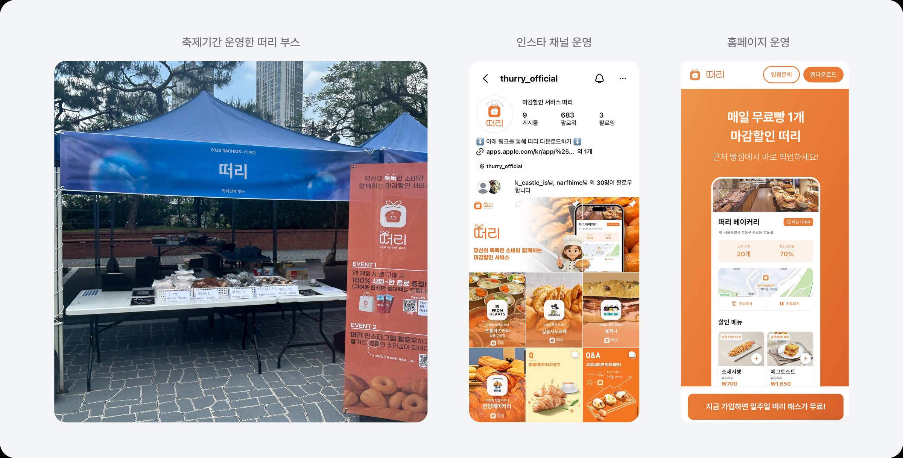
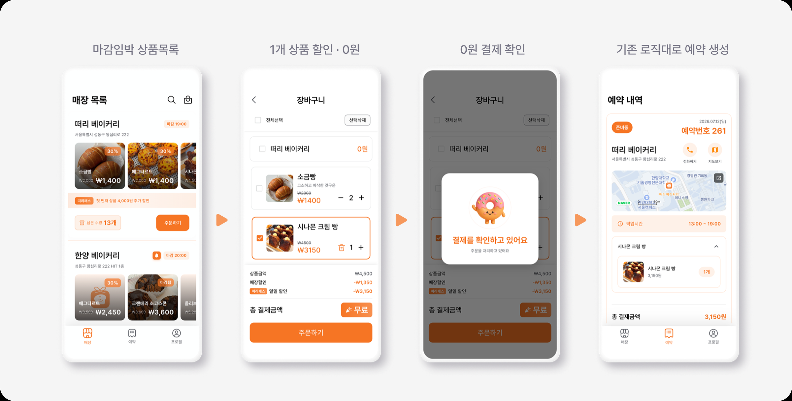

앞선 글에서는 앱 없이 수요를 증명하고, 결제·예약 시스템을 붙여 떠리를 출시한 뒤 매출을 키우기까지를 이야기했어요.
이번 글은 그래서 어떻게 망했는지에 대한 이야기예요. 제품을 만드는 것만큼, 사업을 굴리는 데서 배운 것도 많았거든요.

결정적인 판단 하나가 어긋났어요
기존 서비스는 전부 랜덤 패키지였어요. 안에 뭐가 들었는지 모르지만 30~40% 저렴하게 묶음으로 사가는 구조죠. 저희는 개별 상품 선택으로 갔습니다.
근거는 사전 설문이었어요. 오픈채팅방 학생 170명 중 134명(약 79%)이 개별 상품을 선호했거든요. 원하는 것만 살 수 있고 최소 결제 금액도 낮으니 구매 장벽이 내려간다고 판단했죠.
그런데 이 설문에 사장님 응답은 없었어요. 표본이 적어서 분석에서 뺐거든요. 사용자 79%는 확보하고, 같은 방식을 매일 운영해야 하는 쪽의 데이터 없이 핵심 차별점을 정한 거예요.
72곳이 거절한 이유를 들었어요
앱을 출시하려면 팔 상품이 필요했어요. 성동구 베이커리를 하루 약 다섯 곳씩 한 달, 총 80곳 이상 방문했습니다. 그렇게 넉 달에 걸쳐 8곳이 입점했어요.
처음엔 남는 빵을 팔아준다니 당연히 좋아하실 거라 생각했어요. 그래서 거절을 영업 능력 부족으로 읽었습니다. 더 잘 준비해서 가면 되는 문제라고요.
돌이켜보면 이 숫자 자체가 이미 답이었어요. 현장에서 들은 이유는 저희 설득이 부족해서가 아니었거든요.
1) 기존 고객과의 가격 형평성
5시까지 5천 원에 사던 빵을 5시 1분에 3,500원에 팔면, 정가로 산 손님은 어떻게 되나요. 손님들이 정시에 안 사고 마감만 기다릴 가능성도 있었어요.
2) 브랜드 가치
사장님들은 본인 상품이 낮은 가격과 함께 공개적으로 노출되는 것을 부담스러워하셨어요. 기존 서비스들이 랜덤 패키지를 쓴 이유가 여기 있었더라고요.
3) 추가 운영 부담
이미 배달·예약으로 플랫폼을 서너 개씩 쓰고 계셨어요. 떠리를 추가하면 매일 상품과 수량을 등록하고 실제 재고와 맞춰야 했죠. 빵 몇 개 더 팔려고 새로운 관리 업무를 떠안는 구조였어요.
4) 기대보다 낮은 경제적 효용
일부 매장은 남는 빵을 직원에게 주거나 기부하고 계셨어요. 이미 처리 방법이 있으니 적은 금액을 벌자고 일을 늘릴 이유가 없었던 거죠.
사장님이 원한 건 폐기 비용 절감이 아니었어요. 새로운 손님의 방문과 재구매였습니다. 결국 공급자가 원한 건 할인 판매 기능이 아니라 실질적인 구매력과 홍보 효과였어요.
사용자에게 좋은 게 시장에 좋은 건 아니었어요
여기서 앞의 설문이 돌아왔어요. 개별 상품 선택은 사용자 79%가 선호한 방식이지만, 사장님은 상품마다 마감할 수량을 매일 등록해야 했습니다.
사용자의 선택권을 늘릴수록
공급자의 관리 비용도 함께 늘어난다.
기존 서비스의 랜덤 패키지는 사용자 경험이 부족한 게 아니라 공급자의 부담을 줄이려는 구조였어요. 설문에서 사장님 표본을 확보하지 못한 게 여기서 비용으로 돌아왔습니다.
돈을 잘못 벌었어요
6개월 누적 거래액은 500만 원이었어요. 월 최대 매출이 200만 원이니 평월은 그 절반에도 못 미쳤다는 뜻이죠. 그리고 최고 매출을 낸 그 달에도 단위 경제성은 무너져 있었습니다.
- 수수료 10% → 월 매출 200만 원에도 수익은 약 20만 원
- 결제 관련 비용만 월 30만~35만 원
- 여기에 서버·마케팅·영업·운영 비용이 추가
- 최고 매출을 낸 달에도 적자
캠퍼스타운 분기 지원금 500만 원으로 버티는 구조였어요. 그때 구분해야 했던 건 더 열심히 하면 풀리는 문제인지, 구조적으로 안 되는 문제인지였습니다.
가장 강한 조건으로 마지막 실험을 했어요
방학이 시작되자 구매가 눈에 띄게 줄었어요. 팔리지 않으니 점주는 상품을 올리지 않고, 볼 게 없으니 사용자는 앱을 열지 않고, 사용자가 없으니 점주는 더 소홀해졌죠. 전형적인 악순환이었습니다.
그래서 빵값을 0원으로 만드는 실험을 설계했어요. 1,900원짜리 일주일 패스를 사면 하루 한 번 빵을 0원에 받아가는 구조였죠.
무료로 줘도 사람들이 오지 않는다면,
가격은 핵심 문제가 아니다.

- 패스를 접한 사용자 약 350명
- 패스 구매 약 50명 (약 11%)
- 실제로 빵을 픽업 약 20명 (구매자의 40%)
- 두 번 이상 픽업 2명 (구매자의 약 4%)
돈을 내고 패스를 산 50명 중 30명이 한 번도 오지 않았어요. 병목은 가격이 아니라 인지도와 이용 습관이었습니다.
종료도 제품 결정이었어요
꽃집 등 다른 상품군 확장도 검토했어요. 그런데 매장을 직접 영업하고 재고를 입력하게 만들고 양쪽 문의를 처리해야 하는 구조는 그대로였습니다. 여기에 팀원들의 군 입대와 역할 변화도 겹쳤고요.
가장 강한 조건에서 핵심 가설이 검증되지 않았고, 더 투입해도 구조가 개선될 가능성이 낮다고 판단했어요. 감정이 아니라 구매·재구매 데이터를 근거로 종료했습니다.
다만 솔직하게 덧붙이면, 이 실험을 시작하기 전에 "어느 수준이면 접는다"를 미리 정해두지 않았어요. 결과를 다 보고 나서 판단한 거죠. 기준선이 없으면 어떤 숫자가 나와도 "조금만 더"를 붙일 수 있다는 걸 그때 알았습니다.
지금은 실험을 설계할 때 성공 기준과 종료 기준을 함께 적고 시작해요. 회사에서 PoC를 제안할 때도 같은 순서예요.
남은 것
- 설문의 표본이 곧 의사결정의 범위다 사용자 79%는 확보했지만 공급자 데이터 없이 핵심 차별점을 정했고, 그 공백이 입점 전환율로 돌아왔어요. 이후 플랫폼을 볼 때는 공급자의 작업량·기대 수익·전환 비용을 함께 확인해요.
- 성장 지표보다 단위 경제성이 먼저다 거래 한 건이 얼마의 수익과 비용을 만드는지, 규모가 커지면 구조가 나아지는지를 먼저 봅니다.
- 실험 전에 종료 기준을 함께 적는다 떠리에서는 결과를 보고 나서 판단했어요. 기준선이 없으면 어떤 숫자에도 "조금만 더"를 붙일 수 있습니다. 지금은 성공 기준과 종료 기준을 같이 적고 실험을 시작해요.